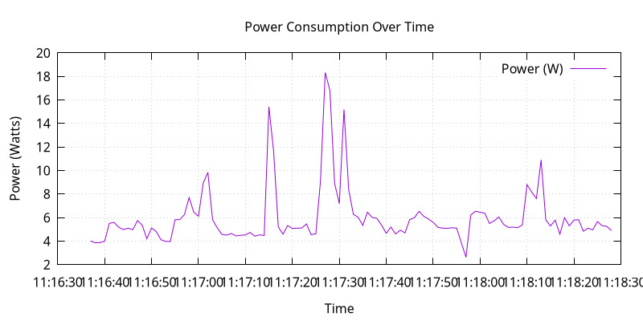

Giovanni's Diary > Subjects > Programming > Linux > Notes >
Optimize power consumption on Linux
This documents contains notes regarding my efforts to increase battery life on my Linux laptop[s]. I don't use my laptop for computational-expensive tasks, I'd rather prefer the battery to last longer. Here is a list of things I did to optimize for lower power consumption.
This guide is focused on laptops but you can get value even for desktop servers. If you have any comment / correction / suggestion please let me know by sending me an email at giovanni.santini@proton.me or message me on Mastodon @santo7@mastodon.social.
Index
- ACPI Specification
- Linux's ACPI
- Understand what consumes the most
- Powertop
- Iotop
- Plot power usage
- Save yourself some time: TLP
- Kernel Settings
- Frequency scaling
- Maximum charge level
- Omit Scheduling-Clock ticks for idle CPUs
- Disable Atime in BTRFS
- Kernel flags
- Helpful tips
- Light graphical sessions
- Have less background processes running
- Lower the backlight
- Conclusions
ACPI Specification
Before tinkering with your system, you should have a decent understanding of how the operating system works in the context of power management. I will now give you a quick overview of power consumption on a linux system running on the x86 architecture.
Let's start with the hardware and how we can interact with It, more specifically the CPU. Similarly to other hardware components, intel CPUs implement the ACPI specification which enables an ACPI compatible operating system to interface with hardware devices to fine tune performance.
For processors, ACPI defines different power states within the global working state G0, and they are called "Cx states": C0 means that the processor is executing instructions, C1 to Cn are sleeping states where the processor consumes less; C3 consumes less than C2 which consumes less than C1 (but this is not specified from C4 to Cn).
Furthermore, ACPI defines "Px states" which are other states inside C0, where P0 is maximum performance. Operating systems can change the performance state of a core "on the fly" which is known as CPU throttling, giving us more opportunity for optimizations.
Hardware may send interrupts that can wake up a processor from a sleeping or low-power state, therefore you should try to minimize the number of interrupts (by disabling devices) or balance them efficiently across cores (using something like irqbalance, for example).
Going back to ACPI, other devices are also a great source of power consumption. Hardware other than processors have "device power states" D0 to D3 where D0 means that the device is fully on, D3 that It is off. ACPI further defines those states for many device types (network, storage…).
Linux's ACPI
An overview of the Linux's ACPI implementation can be found here. Briefly, It is composed of an OS Service Layer which abstracts the hardware, an user interface via sysfs and procfs, the core implementation which includes an AML interpreter which is used as a language between the firmware and the operating system, and other components which are irrelevant for our discussion.
On Linux, userspace can interact with the ACPI subsystem via sysfs in
/sys/devices/LNXSYSTM:00 or /sys/bus/acpi/devices (if ACPI support
is enabled). Inside, you will find directories that represent ACPI
devices, for each device the directory contains information about
them such as the status or the voltage. You may want to use something
like acpid or upower to dump ACPI info, if you are using some
linux distribution you may have something similar already installed.
Obviously, the more stuff you are doing with your computer, the more energy It will consume. You should prefer light software compiled to machine code, with optimizations enabled and stripped debug information. We will discuss more what other optimizations you can implement.
Understand what consumes the most
While you may try to thinker with configuration files and settings following common heuristics (such as "less processes = less power consumption"), It is more effective to first evaluate the power consumption of your operating system and then make changes to the most power-draining sources in order to have a greater impact on the overall power consumption.
The hard truth is that the best way to get accurate measurements is via some external power meters. You can use various types of smart plugs or usually your UPS for this, however I don't own any of this hardware so I will not give advice. Instead, I will focus on the software side of things and get best-effort data. Even with software, what you can get greately depends on what your hardware provides.
- Powertop
A general tool that works well is powertop which will give you per-process power consumption and information about CPU states, devices and tunable settings to decrease power consumption. It is good practice to calibrate the tool with
powertop --calibrate(only on laptops) before collecting data, this will setup the tool to show correct estimations about power consumption.From the overview tab you can easily see which processes are consuming more power so that you can look into them individually. For example, If you find that systemd is logging too much, try to increase the time between logs, and so on.
- Iotop
Another useful tool is iotop which will give you information about disk usage. Even though this does not directly list power consumption, there is a correlation between disk usage and power consumption so it is beneficial to look into this.
You may start playing around with filesystems and mount options, later we'll see an option in BTRFS that improves performance.
- Plot CPU power usage
To evaluate a change in your system, you can log and graph different statistics and compare changes. The following script records CPU power consumption in Watts on intel systems, It uses intel-rapl to fetch the data, you may need to adapt the code if you are using a CPU from a different brand.
#!/bin/bash set -e OUTFILE="power_log.csv" INTERVAL=1 # seconds ENERGY_PATH=/sys/class/powercap/intel-rapl:0/energy_uj function get_energy { cat $ENERGY_PATH) } function get_time_seconds { date +%s } # Overwrites $OUTFILE echo "timestamp,power_watts" > "$OUTFILE" prev_energy=$(get_energy) prev_time=$(get_time_seconds) # Calculate and append power consumption in watts to $OUTFILE with # a timestamp. Watts are calculated by dividing the difference in # energy between $INTERVAL by the $INTERVAL while true; do sleep "$INTERVAL" curr_energy=$(get_energy) curr_time=$(get_time_seconds) delta_energy=$((curr_energy - prev_energy)) delta_time=$((curr_time - prev_time)) # Handle energy wraparound (32-bit counter) if [[ $delta_energy -lt 0 ]]; then delta_energy=$(( (2**32 + delta_energy) )) fi # Convert to watts power=$(awk "BEGIN { printf \"%.2f\", ($delta_energy / 1000000) / $delta_time }") timestamp=$(date +"%H:%M:%S") echo "$timestamp,$power" | tee -a "$OUTFILE" prev_energy=$curr_energy prev_time=$curr_time done
You can then graph it with gnuplot:
set datafile separator "," set xdata time set timefmt "%H:%M:%S" set format x "%H:%M:%S" set xlabel "Time" set ylabel "Power (Watts)" set title "Power Consumption Over Time" set grid set term pngcairo size 800,400 set output "power_plot.png" plot "power_log.csv" using 1:2 with lines title "Power (W)"
gnuplot plot_power.gp

Figure 1: Gnuplot output
Additionally, you could export the data to prometheus with a similar script so that it integrates with the prometheus + grafana stack.
#!/bin/bash set -e ENERGY_PATH=/sys/class/powercap/intel-rapl:0/energy_uj INTERVAL=1 # seconds METRICS_FILE="/tmp/power_metrics.prom" PORT=9200 function get_energy { cat "$ENERGY_PATH" } function get_time { date +%s } prev_energy=$(get_energy) prev_time=$(get_time) # Start background HTTP server socat TCP-LISTEN:$PORT,reuseaddr,fork SYSTEM:"echo HTTP/1.0 200; echo Content-Type\: text/plain; echo; cat \"$METRICS_FILE\"" & # Metrics writer loop while true; do sleep "$INTERVAL" curr_energy=$(get_energy) curr_time=$(get_time) delta_energy=$((curr_energy - prev_energy)) delta_time=$((curr_time - prev_time)) # Handle 32-bit wraparound if [[ $delta_energy -lt 0 ]]; then delta_energy=$(( (2**32 + delta_energy) )) fi # Calculate power in watts power=$(awk "BEGIN { printf \"%.2f\", ($delta_energy / 1000000) / $delta_time }") cat <<EOF > "$METRICS_FILE" # HELP node_power_watts Estimated power usage from RAPL # TYPE node_power_watts gauge node_power_watts $power EOF prev_energy=$curr_energy prev_time=$curr_time done
And you need to add this to the
prometheus.yamlfile:scrape_configs: - job_name: 'cpu_power' static_configs: - targets: ['localhost:9200']
Save yourself time: TLP
To save yourself some time configuring your system, you can use TLP
(or any similar tool) which automatically configures the kernel with
power saving settings. It is supposed to work well out of the box but
you can manually configure the settings via a configuration file in
/etc/tlp.conf. Please refer to the documentation for further
details.
The installation is quite strait forward, check your package manager. To apply a power profile, run the following command (do this every time you change the configuration file):
sudo tlp start
To get system information and the status of the tool, run the following:
tlp-stat -s
There are plenty of utilities like this, use them at your own risk.
Kernel Settings
There are many settings you can tune on linux, which will mostly depend on your hardware and drivers. A decent list can be found in the Archlinux's Power Management page.
To access the ACPI subsystem you need to have the following enabled in your kernel:
Power management and ACPI options --->
-*- Device power management core functionality
[*] ACPI (Advanced Configuration and Power Interface) Support --->
<*> AC Adapter
<*> Battery
-*- Button
-*- Video
<*> Fan
<*> Processor
<*> Thermal Zone
[*] CPU Frequency scaling --->
Default CPUFreq governor (ondemand) --->
-*- 'performance' governor
<*> 'powersave' governor
<*> 'userspace' governor for userspace frequency scaling
-*- 'ondemand' cpufreq policy governor
<*> 'conservative' cpufreq governor
<*> ACPI Processor P-States driver
Additionally, enable Thermal and Powercap sysfs for your CPU:
Device Drivers --->
-*- Thermal drivers --->
(0) Emergency poweroff delay in milli-seconds
[*] Expose thermal sensors as hwmon device
-*- Enable writable trip points
Default Thermal governor (step_wise) --->
[*] Fair-share thermal governor
-*- Step_wise thermal governor
-*- Bang Bang thermal governor
-*- User_space thermal governor
[ ] Thermal emulation mode support
[*] Power allocator thermal governor
Intel Thermal drivers --->
<M> Intel PowerClamp idle injection driver
<M> X86 package temperature thermal driver
< > Intel SoCs DTS thermal driver
<M> Intel PCH Thermal Reporting Driver
ACPI INT340X thermal drivers --->
<M> ACPI INT340X thermal drivers
And RAPL, which gives additional information about the processor:
Device Drivers ---> [*] Generic powercap sysfs driver ---> <M> Intel RAPL Support
Now you should have all the requirements to start playing with
the settings, tlp.conf is a good place to start.
- Frequency Scaling
You can choose a frequency scaling governor to manage throttling. This will dynamically change the clock's frequency and voltage configuration via P-states. Assuming you are using TLP, to list the available governors you can run:
sudo tlp-stat -p | grep governor
By default, Fedora 41 has "performance" and "powersave", so I choose powersave in tlp's settings (which is the default setting).
- Maximum charge level
To increase battery life, It is recommended to reduce the maximum charge level below 100% and prevent the charging process to happen for every short discharge from the maximum. By default, TLP does not set this. To enable it, set the variables
START_CHARGE_THRESH_BATxandSTART_CHARGE_THRESH_BATxto something like75and80, wherexrepresent the number of the battery in your laptop. Sadly, on some laptops (like my HP one) this is not supported and the commandtlp-stat -bwould output/sys/class/power_supply/BAT1/charge_control_start_threshold (not available). - Omit Scheduling-Clock ticks for idle CPUs
If you are doing mostly lightweight work with long idle periods, you can limit the scheduling-clock interrupt to prevent waking up some cores when It is not needed. The linux kernel documentation says that if scheduling is set to periodic, the system would drain 2-3 times faster compared to a kernel with this disabled, so It is quite a big deal. You may need it if you are running aggressive real-time response constraints, but this is not our case.
Enable the following in your kernel configuration:
CONFIG_NO_HZ_IDLE=y CONFIG_HZ_100=y
- Disable Atime in BTRFS
BTRFS is a popular filesystem. A part of Its design is the CoW (Copy on Write) where a certain file would get copied in another location when a modification is made, this is necessary for the snapshotting functionality of the filesystem. However, this causes the problem where a file would get copied even if you just read it, just by updating the last access timestamp. This LWN article from Jonathan Corbet explains this well:
If somebody takes a snapshot of a filesystem, then performs a recursive grep on that filesystem, the last-access time of every file touched may be updated. That, in turn, can cause copy-on-write operations on each file's inode structure, with the result that many or all of the inodes in the filesystem may be duplicated. That can increase the space consumption of the filesystem considerably; Alexander posted an example where a recursive grep caused 2.2GB of free space to disappear. That is a surprising result for what is meant to be a read-only operation.
To disable the Atime feature, you need to put the
noatimeoption on the BTRFS entries in/etc/fstab. Note that some applications or test cases that rely on sensitive timestamps may break, so keep this in mind. - Kernel Flags
You can add the following kernel flags when booting your system:
pcie_aspm=force: force PCIe Active State Power Management to put PCIe devices into low-power states. Some devices may stop working if they are not implemented correctly, so do your own tests.- For intel GPUs:
i915.enable_dc=2: enable the display engine to enter low-power states.i915.enable_fbc=1: enables Frame Buffer Compression (FBC), reducing memory bandwidth when the screen content is statici915.enable_psr=1: enables Panel Self Refresh (PSR) — lets the display refresh from its own memory instead of continuously redrawing.
Helpful tips
Here is a list of other helpful things that will make your operating system lighter and more efficient.
- Light graphical session
If you are using a graphical environment, chances are that you do not need a full blown desktop environment to manage the position of your windows. The lighter your window manager, the better. My argument is that all you need is a program that can create windows and move them; such program should be simple and small, understandable and hackable. Everything else is bloated software, I would suggest something like dwm or ctwm.
I did not compare Wayland-based window managers against X11, I found some benchmarks online and they are similar in power consumption but the benchmarks were made with Gnome. Unless you find a really minimal window manager using wayland, the good old simple X11 window managers are the best.
- Have less background processes running
If you are using a linux distribution instead of compiling your system on your own, chances are that the maintainers of said distribution have enabled a bunch of stuff you don't really need. This goes from kernel modules for various hardware, which you do not need, to background daemons to do things like reporting crashes.
If your system uses systemd, you can check active services using the
systemctl statuscommand. Even though many of them may be idle and may not contribute much to the overall power consumption, they still consume resources so It is helpful to have less things running in your system.Disable things like Bluetooth if you don't need it, crash reporting daemons, etc…
- Lower the backlight
Lower the backlight of your laptop as much as you are comfortable with.
Conclusions
I hope you learned something new from this article. I will keep this updated with new information I gain overtime, if you have any suggestion to improve the work I'd be happy to hear it.
Travel: Linux Notes, Index